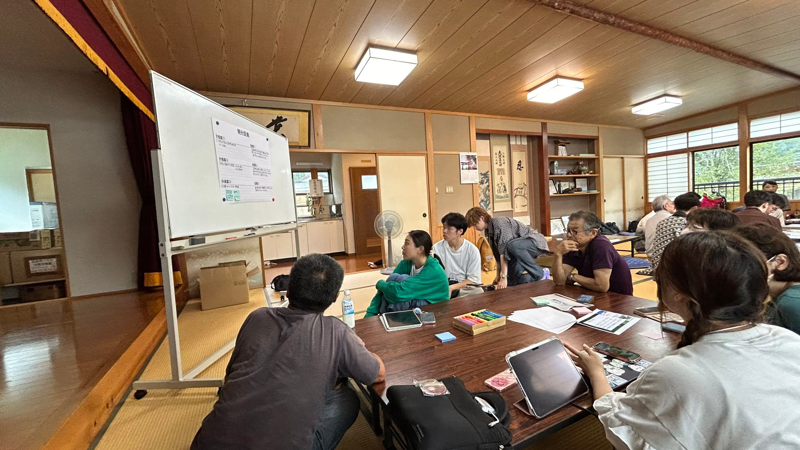

福島復興プロジェクト


福島復興プロジェクトとは
委員会での環境活動・活動分野に記載したような地域支援活動と,大学で学んだ実工学を通して培ってきた知識と経験を活かして,福島にある集落の活性化に尽力する.
福島復興プロジェクトの活動
高齢化・人口減少による、生活利便性の維持の難化、その影響により農耕や行事の存続が難しくなっている等の課題に取り組みました。私はリーダーとしてメンバーを引っ張るの役割を担っており、空き家の活用、観光戦略、SNSなどでの情報発信を行う計画作成と実行に向けての準備・現地の方へのヒアリング等を行いました。また、只見町の行事や農林業体験を通して、地域の人と交流を深め、より良い地域の活性化を模索していきました。私は、この体験から得た計画力・積極性を活かして業務に携わっていきたいです。